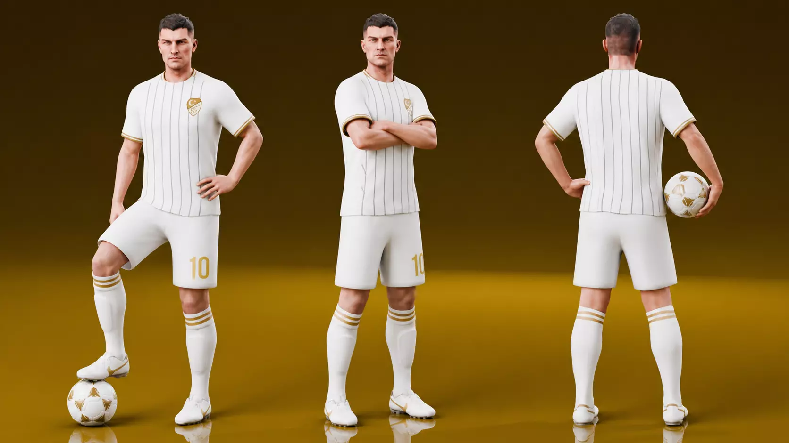
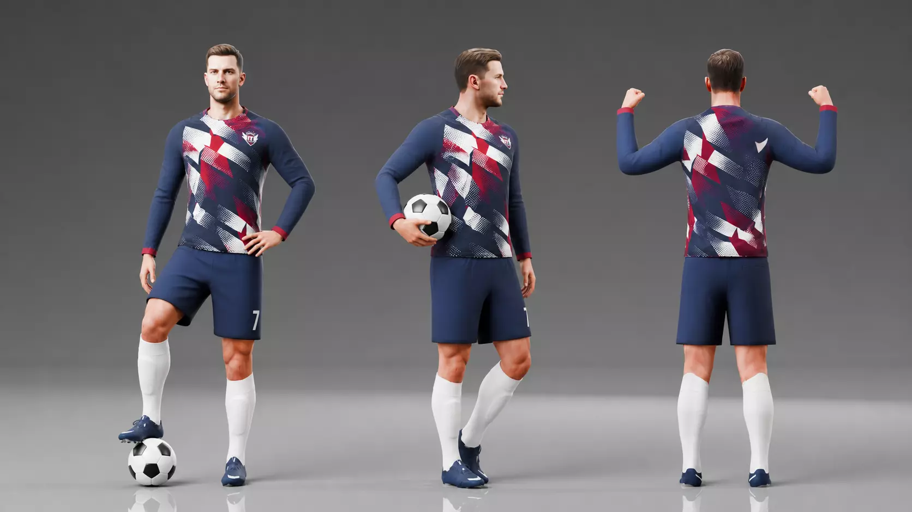
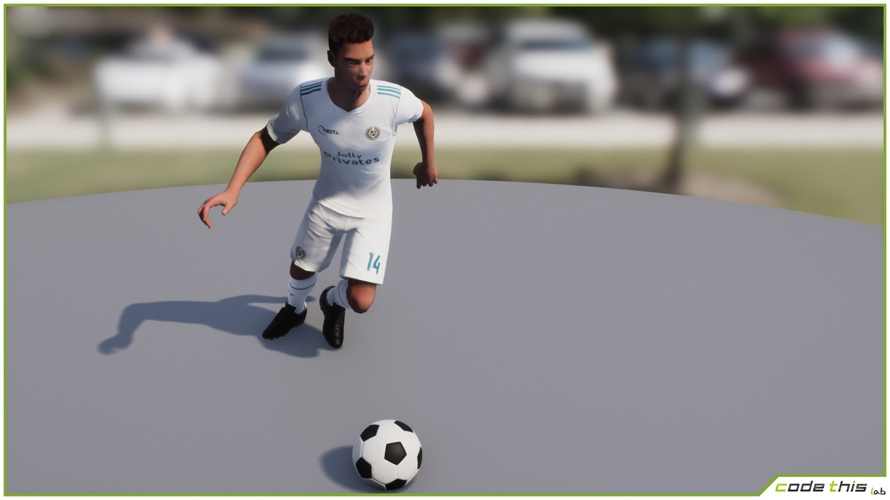
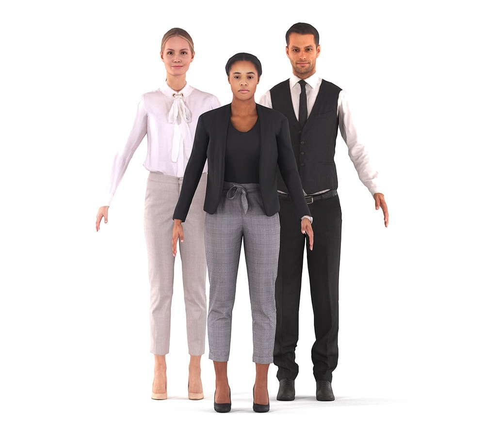

{kind=link}

B / 今回の第一候補$9.99
Soccer Player – Rigged
Hisenberg / CGTrader · V2
良い点：半袖で肘・前腕が見える。白いキットは輪郭も読み取りやすく、練習の再現に合わせやすい。
気になる点：顔・髪・服はまだゲーム的。Aから大幅な質感向上を期待して買う候補ではありません。
リグ付き / GLB・FBX・Blender・OBJ / 約17.5k頂点。指の変形品質とMOVEへの適合は未検証。
公式画像・商品詳細 ↗前の長袖モデルに、半袖の選手と別メーカーのモデルを追加しました。すべて販売元の実際のプレビューです。画像をクリックすると原寸で見られます。Take Aへの適用前・未購入です。
半袖で前腕が見え、体の接触を追いやすいからです。ただしAとBは同じ作者で、写実性が一段上がったとは思いません。「寄っても実写に近い」という希望には、まだ足りません。Cも価格だけで優れているとは判断しません。

Hisenberg / CGTrader · V2
良い点：半袖で肘・前腕が見える。白いキットは輪郭も読み取りやすく、練習の再現に合わせやすい。
気になる点：顔・髪・服はまだゲーム的。Aから大幅な質感向上を期待して買う候補ではありません。
リグ付き / GLB・FBX・Blender・OBJ / 約17.5k頂点。指の変形品質とMOVEへの適合は未検証。
公式画像・商品詳細 ↗
Hisenberg / CGTrader
良い点：自然な選手体型。髪・ウェア・ソックスまで一式で揃い、導入しやすい形式です。
気になる点：長袖で腕の形が見えにくい。今回の半袖の練習映像にはBのほうが合うと思います。
リグ付き / GLB・FBX・Blender・OBJ / 14,548頂点。カート内・未決済。
公式画像・商品詳細 ↗
Code This Lab srl / Fab · ライセンス別価格・税別
良い点：服のしわや体の厚みが分かる、半袖の完成済み選手。Unrealでの表示例があります。
気になる点：見た目が明確にBより良いとは思いません。現在のWebビューアへは変換・接続が必要です。
60,882頂点 / 最大4Kテクスチャ / リグ付き / 掲載形式はUnreal Engine。付属31動作はTake Aの計測動作とは別物です。購入時の適用ライセンスと$30上限を要確認。
公式画像・商品詳細 ↗
Renderpeople / 無料サンプル
良い点：実在の人をスキャンした素材。肌・顔・服の自然さは、今回目指したい方向に近いと感じます。
気になる点：これは選手ではなく私服モデル。このままフットサルには使えず、ユニフォーム素材と着せ替え作業が別途必要です。
スキン付き骨格 / 10–15kポリゴン / 8Kテクスチャ。無料の質感検証候補であり、完成済みサッカー選手の代替ではありません。
無料モデル・公式説明 ↗見た目は人物素材で改善し、動きは既存のMOVEデータを移します。手首・指・足元の崩れは、骨格の対応と変形を別に確認します。どの候補も森岡さん本人の顔・体型の再現ではありません。
{kind=link}
{kind=link}
{kind=link}